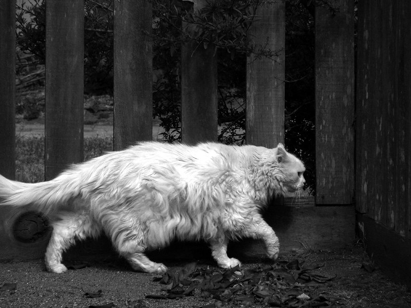

Gummy has his distinct whiskers and white fur that everyone can identify him as as soon as they see him. Despite apparences he is one of the nicest and friendiest animals in the jungle or at least when he's not hungry anyway.He moves on all fours like a lion does and this makes him burn alot of energy fast so he is always careful to eat enough food.He has a mean look but most animals know gummy is always approachable when they have problems.
Gummy doesn't originate from anywhere in particular except i used the idea of a mystical forest from a book I read many years ago called FableHeaven. It isn't particularly special to me but there is the part when the two main characters get lost in the forest that I never forgot over the years